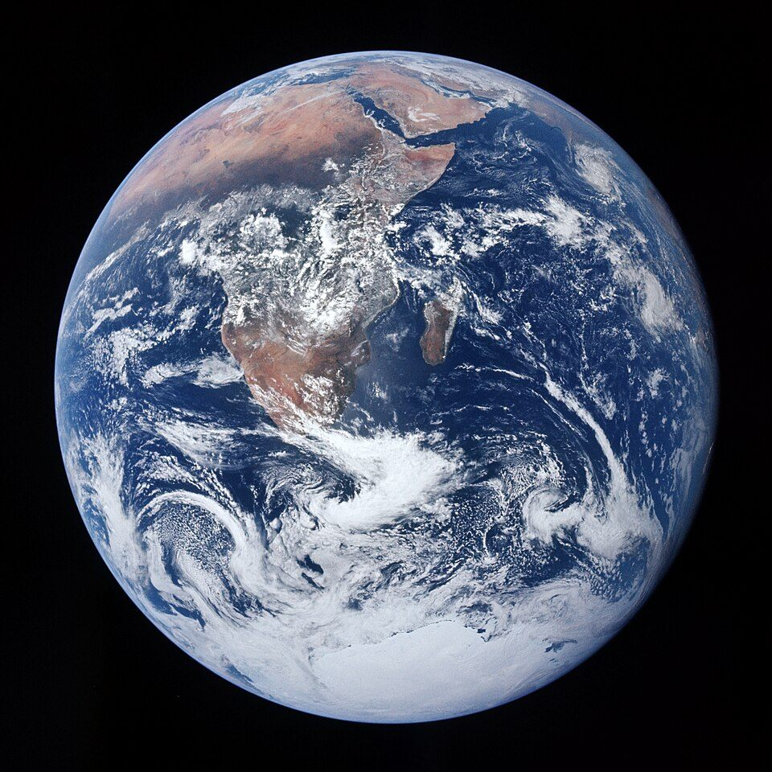
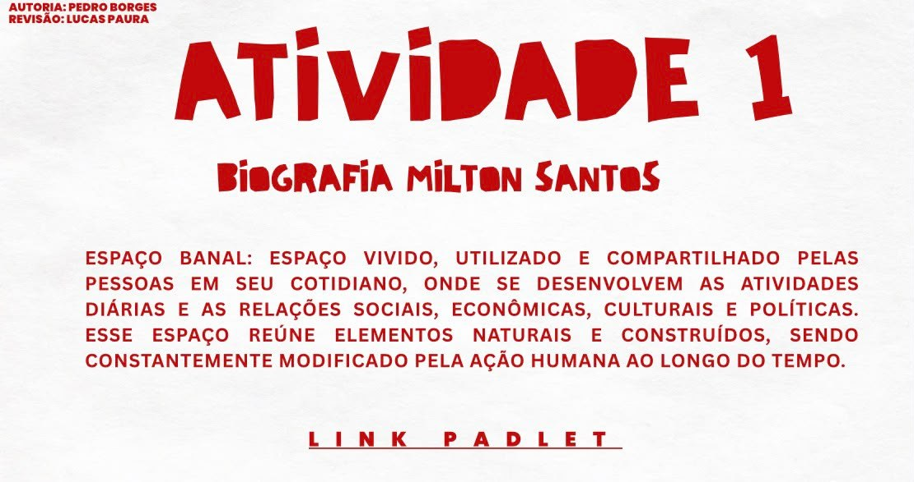

O que estudei
- Relações internacionais e posicionamento oficial dos países
- O espaço geográfico representado na literatura
- Milton Santos e o conceito de espaço banal
A Geografia apareceu este ano integrada às outras disciplinas de Ciências Humanas e de Linguagens. Um Documento de Posição Oficial (DPO) apresenta o ponto de vista de um país sobre um tema internacional, levando em conta seu território, sua economia e suas relações com outros países.
Também estudei como o espaço geográfico, como a cidade e o cortiço, aparece nas obras do Realismo e do Naturalismo e influencia a vida dos personagens.
A Geografia ajuda a entender por que os países defendem posições diferentes em temas como clima, comércio e migração: cada um tem recursos naturais, economia e população diferentes. Um país que depende do petróleo, por exemplo, tende a ter uma posição diferente sobre energia limpa do que um país ameaçado pelo aumento do nível do mar.
Atividades e trabalhos
- Elaboração do Documento de Posição Oficial (DPO 2026)
- Atividade 1: Biografia de Milton Santos
- Seminário: Espaços Geográficos Literários do Realismo e Naturalismo (integrado com Literatura)
Para escrever o DPO, foi preciso pesquisar dados do país representado, entender os interesses dele e defender uma posição com argumentos. É o mesmo tipo de documento usado em simulações da ONU.
No seminário, o espaço geográfico foi analisado como parte da história: o cortiço, o bairro e a cidade influenciam a vida dos personagens das obras naturalistas.
Na atividade sobre Milton Santos, um dos geógrafos brasileiros mais importantes, trabalhamos a ideia de espaço banal: o espaço vivido e compartilhado pelas pessoas no dia a dia, que muda com a ação humana ao longo do tempo.
Evidências da aprendizagem
Os trabalhos foram entregues na plataforma de tarefas do Senac.

Minha reflexão
Entendi que o lugar onde as pessoas vivem influencia suas oportunidades. Isso vale para os personagens de um romance e também para os países numa negociação internacional.